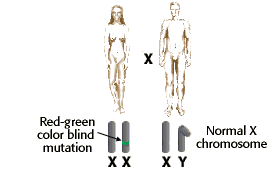
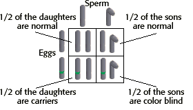

Sex-Linked Inheritance Problem Set
Problem 7: Red-green color blindness in humans
Tutorial to help answer the question
| A human female "carrier" who is heterozygous for the recessive, sex-linked trait causing red-green color blindness (or alternatively, hemophilia), marries a normal male. What proportion of their male progeny will have red-green color blindness (or alternatively, will be hemophiliac)? |
Tutorial
Genotypes and phenotypes of parents
|
The sperm of the father will contain either the normal X chromosome or the Y chromosome. |
 |
Genotypes and phenotypes of offspring
|
Half of the sons would inherit the allele from their mother and be afflicted. |
 |


University of Arizona
Updated: July 15, 1999
Contact the Development Team
http://biology.arizona.edu
All contents copyright © 1996-99. All rights reserved.